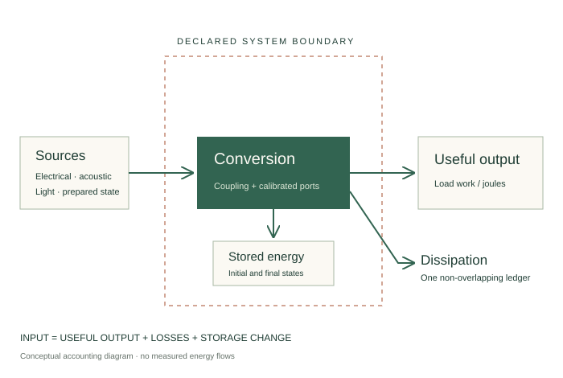

Follow every
joule.
Can resonance improve useful energy conversion? Start with a source, follow the transfer, and count what comes out.
Electromagnetism. Sound. Quantum work.
One accounting question.
Explore six specialists’ proposals, three rounds of criticism and executable models. “Free energy” is the question under investigation. Harvesting, energy transfer and thermodynamic free energy have different definitions.

The stated passive models conserve energy. Resonance changes transfer and conversion; no new energy source has been demonstrated. Simulated traces and ideal efficiencies remain separate from hardware performance.
What would count as progress?
More useful output
Compare electrical and acoustic loads at a fixed drive or equal model input power.
Two conversion models ↗EXTRACTEnergy versus work
Two prepared states can store the same energy yet offer different ideal extractable work.
One-qubit model ↗DISCRIMINATEFind the missing measurement
Test phase error, stored energy, hidden inputs and indistinguishable parameter families.
Protocols and controls ↗Optimize the output.
Audit the boundary.
Useful resonance gains should survive equal-input comparisons, independent energy accounting and an identifiable measurement model.
This is a project synthesis of established mechanics, metrology and quantum thermodynamics. Scientific novelty is unverified. No adjustable “unknown energy” coefficient is introduced to make a residual disappear.
Read the advisor’s decisions and limits ↗